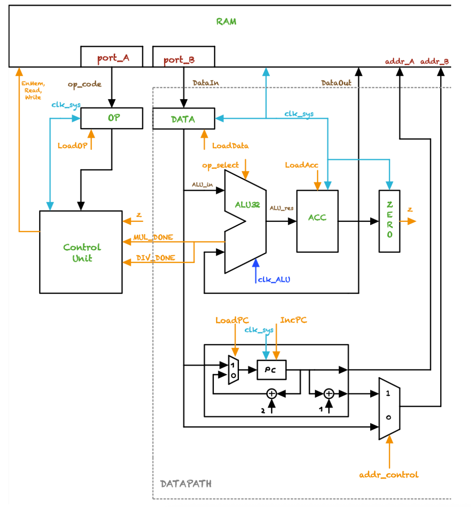
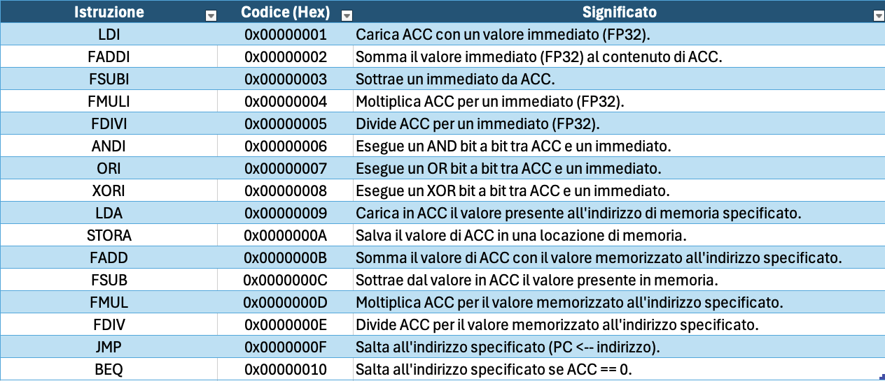

A ground-up design executing IEEE-754 floating-point operations via a custom ISA, pipelined datapath, and optimized computational modules. Synthesized and deployed on a CMOD A7-35T FPGA for real-time performance analysis.

High-Level Architecture
This design employs a Load/Store structure with dual-ported BRAM enabling single-cycle instruction/data fetch. Central to the datapath is a 32-bit ALU handling FP32 operations, coordinated by an FSM-based Control Unit.

ISA Overview
This custom instruction set packs 16 distinct 32-bit operations, each encoded with 8 opcode bits and 24 operand/address bits. Full parallel decoding minimises cycle time.
The instructions fall into five functional families: